Pushgateway
pushgateway 简介：
- pushgateway 用于临时的指标数据收集。
- pushgateway **不支持数据拉取**(pull模式)，需要客户端主动将数据推送给 pushgateway。
- pushgateway 可以单独运行在一个节点，然后需要自定义监控脚本把需要监控的主动推送给 pushgateway的 API 接口，然后 pushgateway 再等待 prometheus server 抓取数据，即 pushgateway 本身没有任何抓取监控数据的功能，目前 pushgateway 只能被动的等待数据从客户端进行推送。
- -persistence.file="" #数据保存的文件，默认只保存在内存中
- -persistence.interval=5m #数据持久化的间隔时间
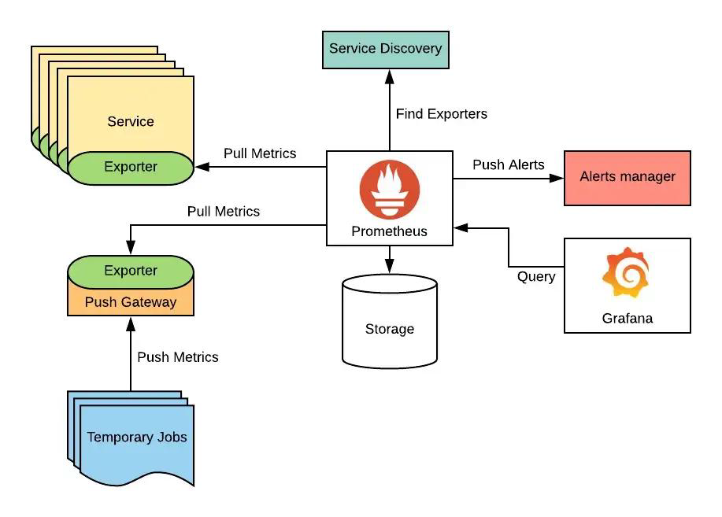
pushgateway 数据采集流程:
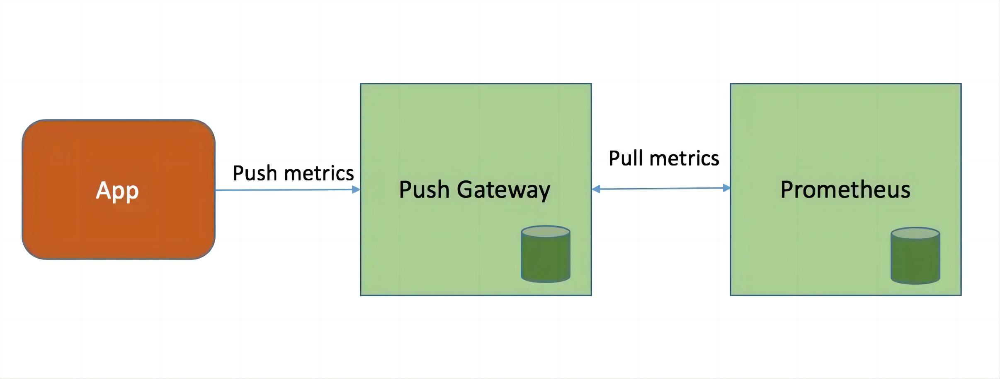
部署pushgateway：
root@prometheus-server2:/apps# tar xvf pushgateway-1.5.1.linux-amd64.tar.gz
root@prometheus-server2:/apps# ln -sv /apps/pushgateway-1.5.1.linux-amd64 /apps/pushgateway
root@prometheus-server2:/apps# cat /etc/systemd/system/pushgateway.service
[Unit]
Description=Prometheus pushgateway
After=network.target
[Service]
ExecStart=/apps/pushgateway/pushgateway
[Install]
WantedBy=multi-user.target
root@prometheus-server2:/apps/pushgateway# systemctl daemon-reload && systemctl start pushgateway && systemctl enable pushgateway
或使用docker部署：
# docker run -d --name pushgateway -p 9091:9091 prom/pushgateway:v1.5.1
验证pushgateway：
监听在90991端口，并且可以通过 http://<ip>:9091/metrics 对外提供指标数据抓取接口
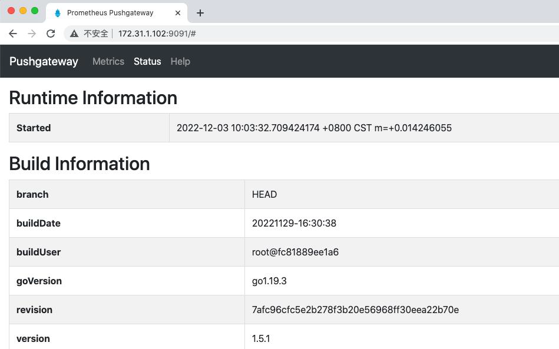
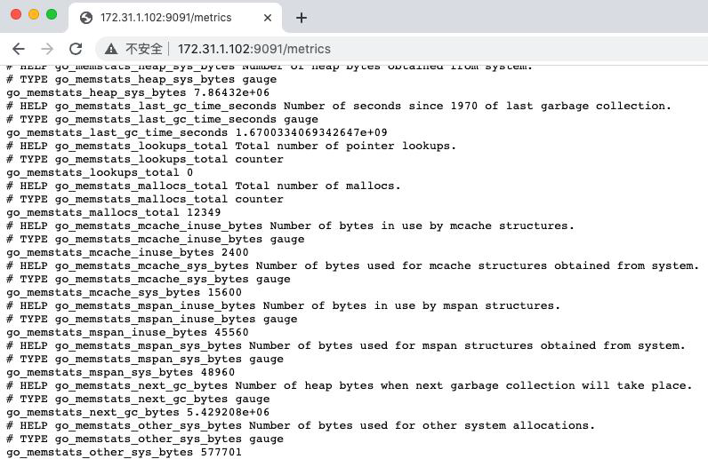
客户端推送单条指标数据：
- 要 Push 数据到 PushGateway 中，可以通过其提供的 API 标准接口来添加，默认 URL 地址为：
http://<ip>:9091/metrics/job/<JOBNAME>{/<LABEL_NAME>/<LABEL_VALUE>} - 其中
<JOBNAME>是必填项，是job的名称，后边可以跟任意数量的标签对，一般我们会添加一个instance/<INSTANCE_NAME>实例名称标签，来方便区分各个指标是在哪个节点产生的。 - 如下推送一个job名称为mytest_job，key为mytest_metric值为2022
- echo "mytest_metric 2088" | curl --data-binary @- http://172.31.1.102:9091/metrics/job/mytest_job
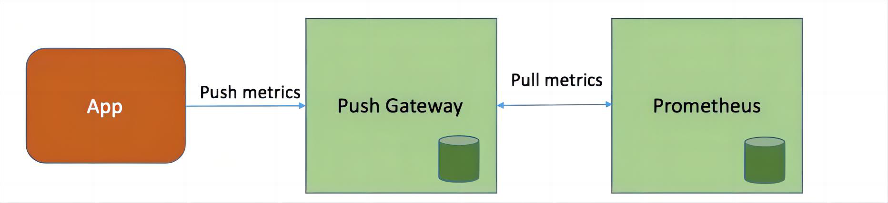
- pushgateway验证指标数据：
- 除了 mytest_metric 指标数据自身以外，pushgateway还为每一条指标数据附加了push_time_seconds 和 push_failure_time_seconds 两个指标，这两个是 PushGateway 自动生成的, 分别用于记录指标数据的成功上传时间和失败上传时间。
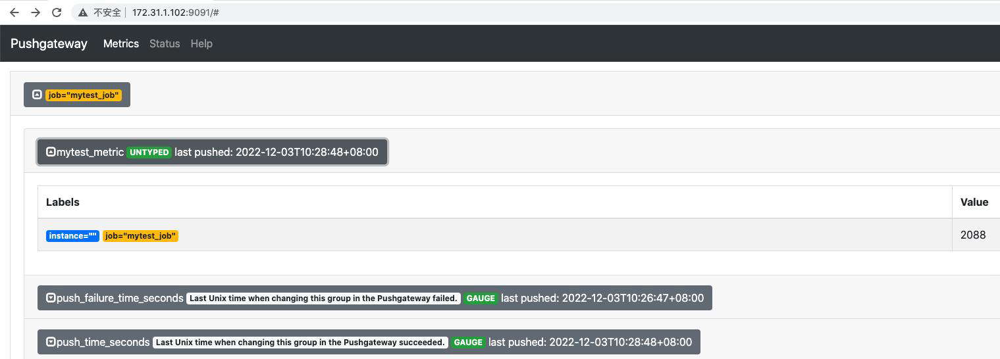
prometheus配置数据采集：
root@prometheus-server1:/apps/prometheus# vim prometheus.yml
- job_name: 'pushgateway-monitor'
scrape_interval: 5s
static_configs:
- targets: ['172.31.1.102:9091']
root@prometheus-server1:/apps/prometheus# systemctl restart prometheus.service
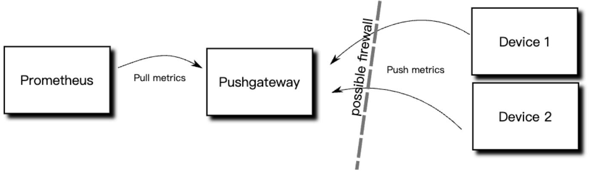
prometheus 验证指标数据：
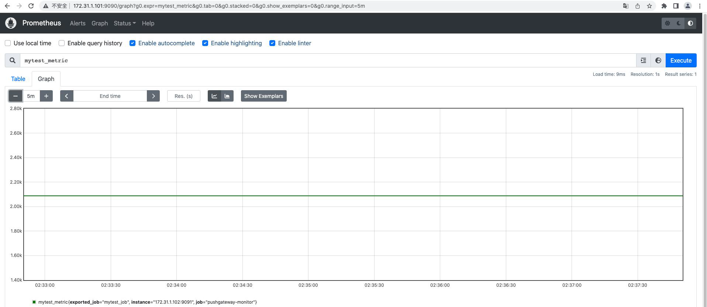
客户端推送多条数据-方式一：
root@prometheus-node1:~# cat <<EOF | curl --data-binary @- http://172.31.1.102:9091/metrics/job/test_job/instance/172.31.2.181
#TYPE node_memory_usage gauge
node_memory_usage 4311744512
# TYPE memory_total gauge
node_memory_total 103481868288
EOF
pushgateway验证数据：
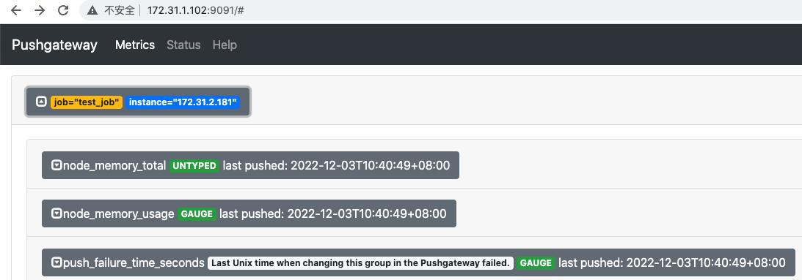
客户端推送多条数据-方式二：
基于自定义脚本实现数据的收集和推送：
root@prometheus-node1:~# cat memory_monitor.sh
#!/bin/bash
total_memory=$(free |awk '/Mem/{print $2}')
used_memory=$(free |awk '/Mem/{print $3}')
job_name="custom_memory_monitor"
instance_name=`ifconfig eth0 | grep -w inet | awk '{print $2}'`
pushgateway_server="http://172.31.1.102:9091/metrics/job"
cat <<EOF | curl --data-binary @- ${pushgateway_server}/${job_name}/instance/${instance_name}
#TYPE custom_memory_total gauge
custom_memory_total $total_memory
#TYPE custom_memory_used gauge
custom_memory_used $used_memory
EOF
分别在不同主机执行脚本，验证指标数据收集和推送：
root@prometheus-node1:~# bash memory_monitor.sh
root@prometheus-node2:~# bash memory_monitor.sh
prometheus验证指标数据：
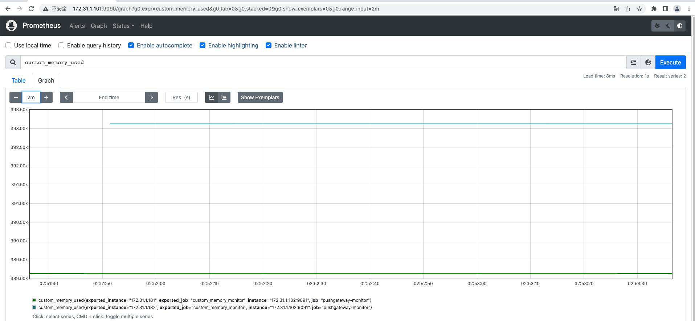
pushgateway指标数的删除：
通过API删除：
root@prometheus-node2:~# curl -X DELETE http://172.31.1.102:9091/metrics/job/custom_memory_monitor/instance/172.31.1.181
在控制台删除：
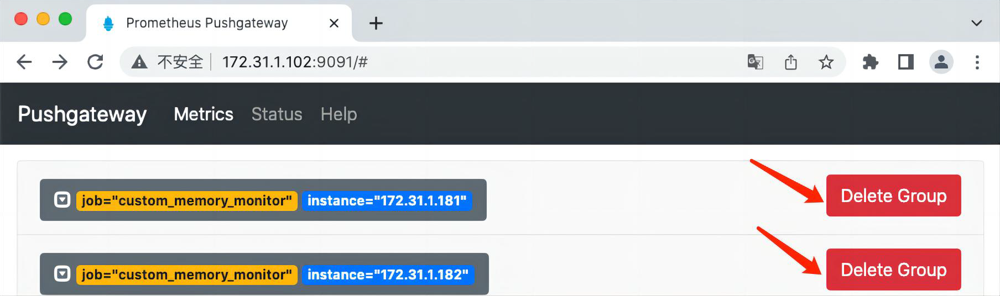